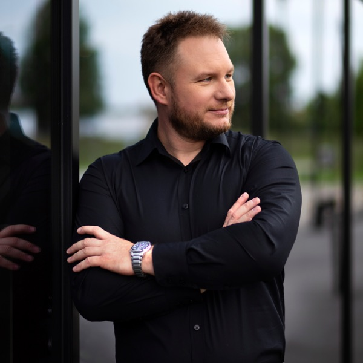

Daniel Werner · marketing B2B · MarTech · e-commerce
Ta strona to kampania.
Ty jesteś leadem.
Od ponad 10 lat buduję lejki, które zamieniają ruch w leady, a leady w sprzedaż. Tutaj możesz to sprawdzić na sobie: w rogu widzisz, co mierzę, kiedy przewijasz i klikasz.

Etap 2 · Zainteresowanie
Liczby, które naprawdę się zdarzyły
Każdą kartę możesz odwrócić. Z tyłu jest kontekst: gdzie i jak.
Każde odwrócenie karty to zdarzenie view_item. Spójrz w rogu ekranu.
Etap 3 · Rozważanie
Jeden komunikat.
Cztery kanały.
Kiedy social media, strona, reklamy i mailing mówią każdy co innego, klient się gubi, a budżet się rozjeżdża. Wpisz swój główny komunikat i uporządkuj kanały jednym kliknięciem.
Tak pracowałem w Rotenso: osobne serwisy dla klientów indywidualnych, instalatorów i firm, każdy z jasną rolą. Jedną kampanię „klimatyzacja to standard” poprowadziłem od internetu po radio, outdoor i kino. Rozpoznawalność marki wzrosła w rok z ok. 6% do ok. 9%.
Ścieżka klienta, czyli moja kariera
20 lat: od sklepów
do systemów
Wybierz, czego szukasz. Podświetlę pasujące etapy. Kliknij etap, żeby zobaczyć szczegóły.
Kontener tagów
Narzędzia, które uruchamiam
Etap 4 · Decyzja
Ten lejek kończy się
rozmową.
Skoro tu jesteś, w moim raporcie to już gorący lead. Napisz, a odpowiem w ciągu 30 minut, bo tyle czekał lead na handlowca, kiedy zautomatyzowałem obsługę zapytań w Rotenso.
✓ Konwersja zapisana. Dziękuję. Twój lead trafia do działu sprzedaży, czyli do mnie.